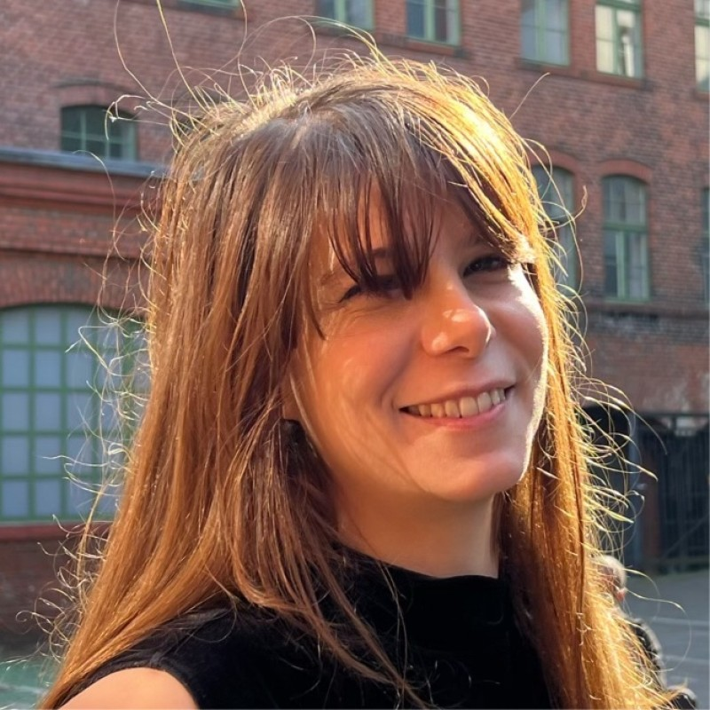
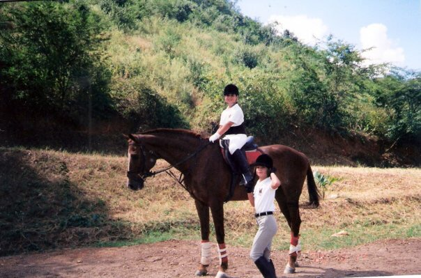
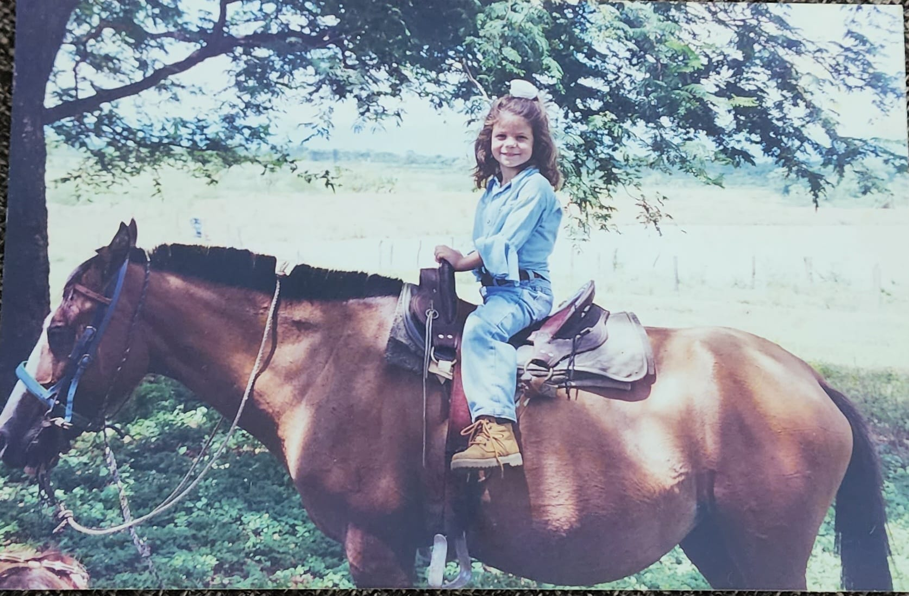
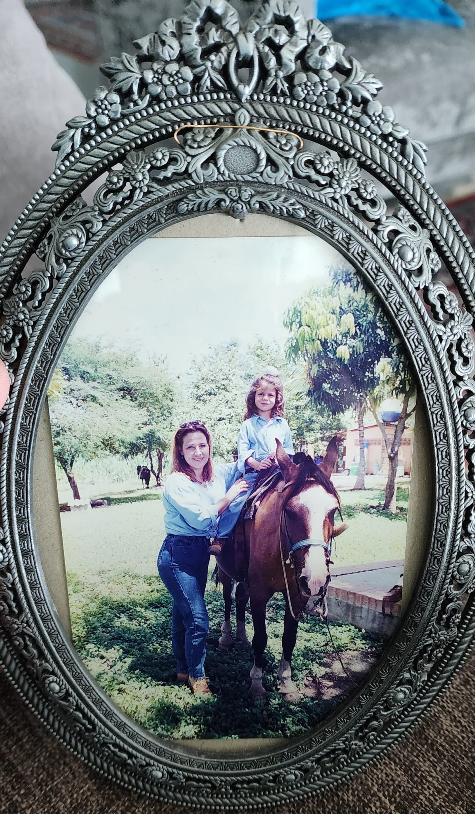
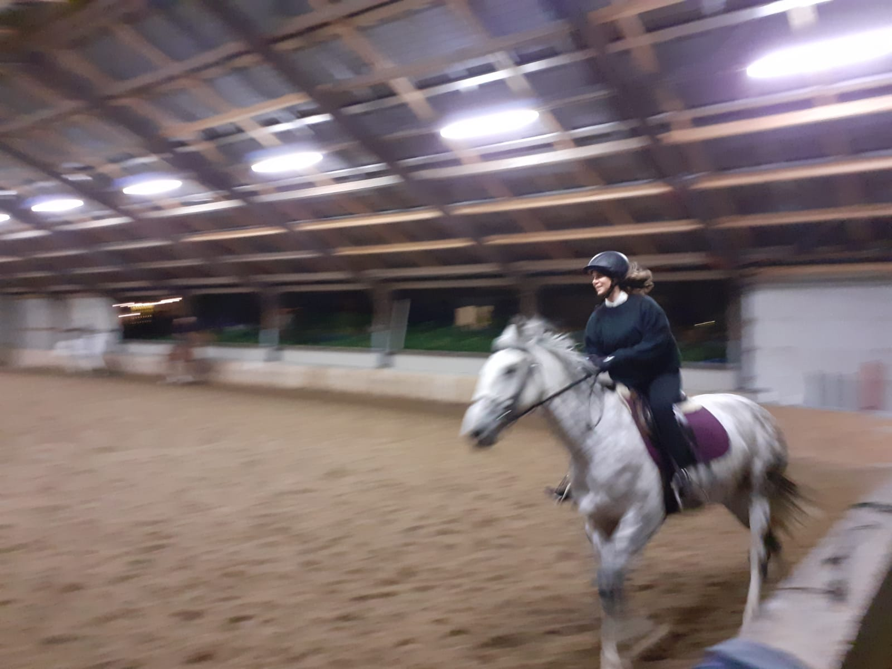
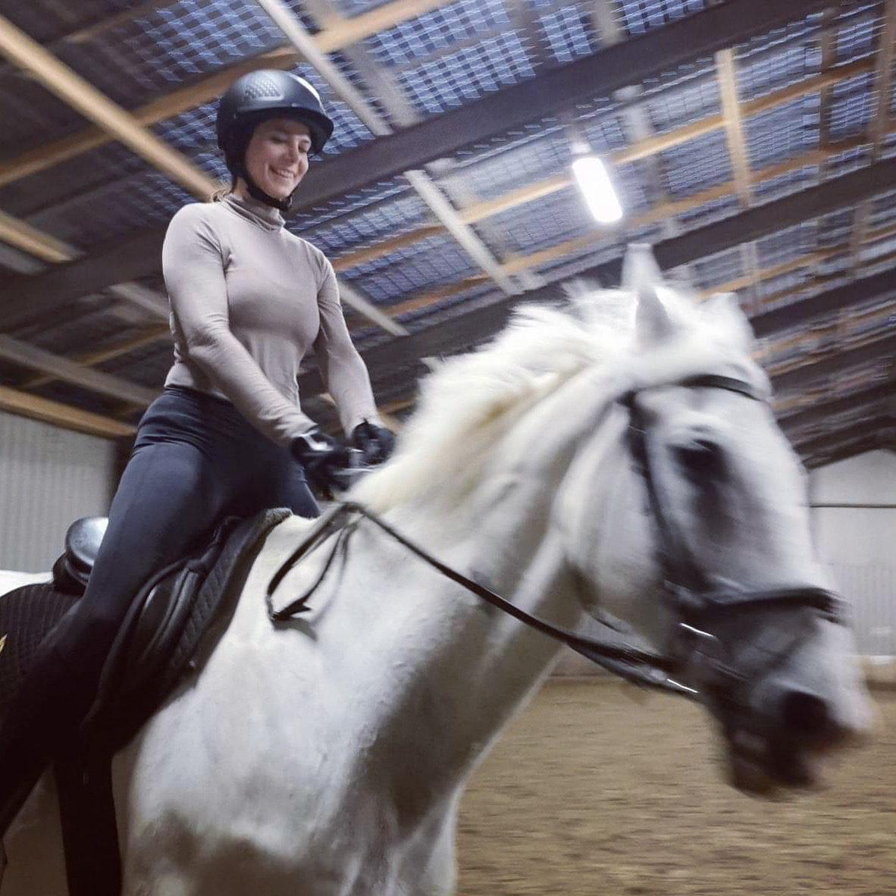
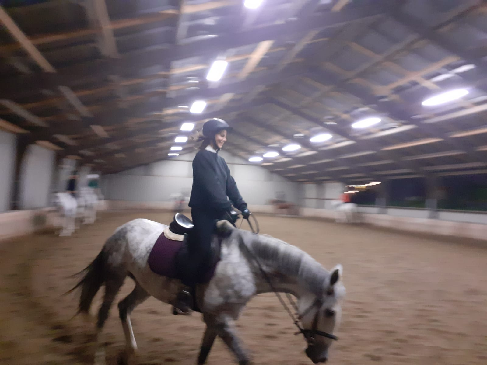

Isabella I. Douzoglou Muñoz
Communicator | Teaching Assistant @ MIT | Quantum Café co-founder

Communicator | Teaching Assistant @ MIT | Quantum Café co-founder
Hi! I'm Isabella! I'm an interdisciplinary scientist, currently a TA at MIT co-developing a machine learning course. Computer science allowed me to explore bioinformatics, systems biology, machine learning, physics, biophysics, neuroscience, and optical computing.
My missions are to help scientists, build community, and communicate science that anyone can understand. I co-founded the Quantum Café, a quarterly gathering for science communication between Boston and Berlin as part of that mission.
Driven by curiosity and creativity!
Charité – Universitätsmedizin Berlin
Mentored by Prof. Dr. Kathrin de la Rosa.
Expected 2027
Dual Degree
University of Amsterdam & Vrije Universiteit Amsterdam
2020
University of Miami
2013
Focus in motion pictures
University of Miami
2013
The Engine, MIT · Cambridge, MA
Quantum + AI workshop hosted by Quantum Café at the AGI House Hackathon.
The C-terminus of α-Synuclein Regulates its Dynamic Cellular Internalization by Neurexin 1β
Molecular Biology of the Cell
Full gig history on Resident Advisor.
I love horses, dancing, and learning.






Please feel free to reach out!